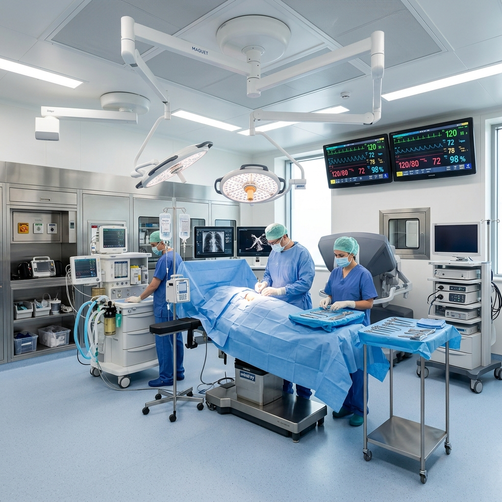

For over 15 years, Laxmi Multi-Speciality Hospital has been Firozabad's cornerstone for advanced clinical solutions. What started as an ambitious primary care clinic has matured into a comprehensive, multi-specialty institution offering 100+ diagnostic beds, advanced ICU spaces, level-1 trauma wards, and fully modular surgical suites.
We were founded on the ethical principle that top-tier modern medical treatment should not be restricted to tier-1 metropolitan cities. By recruiting renowned medical doctors, investing in top-tier medical apparatus, and preserving transparent billing systems, we bring world-class healthcare directly to local families in Uttar Pradesh.
"A hospital's true worth is measured in moments of critical emergencies. Our ability to respond immediately to life-threatening trauma determines our success."
Dr. Piyush Taneja Senior Consultant Physician
What drives Laxmi Hospital's daily operations and medical successes.
To become the clinical benchmark for ethical, multi-specialty patient treatments in western Uttar Pradesh by integrating senior medical veterans and premium, low-radiation diagnostic devices.
To provide immediate 24x7 trauma care, safe neonatal support, high-accuracy diagnostics, and precise clinical surgeries at affordable costs to every social tier in Firozabad.
Maintaining zero medical compromise, complete transparent billing practices, ethical drug prescribing, and a hygienic hospital recovery atmosphere (100% infection control protocol).

Laxmi Hospital operates on advanced technological grounds to guarantee that our surgeons and physicians have the exact high-fidelity apparatus needed to secure success in critical surgeries.
Our Advanced Life Support (ALS) ambulances are positioned at key hubs in Firozabad to guarantee the fastest pickup times.